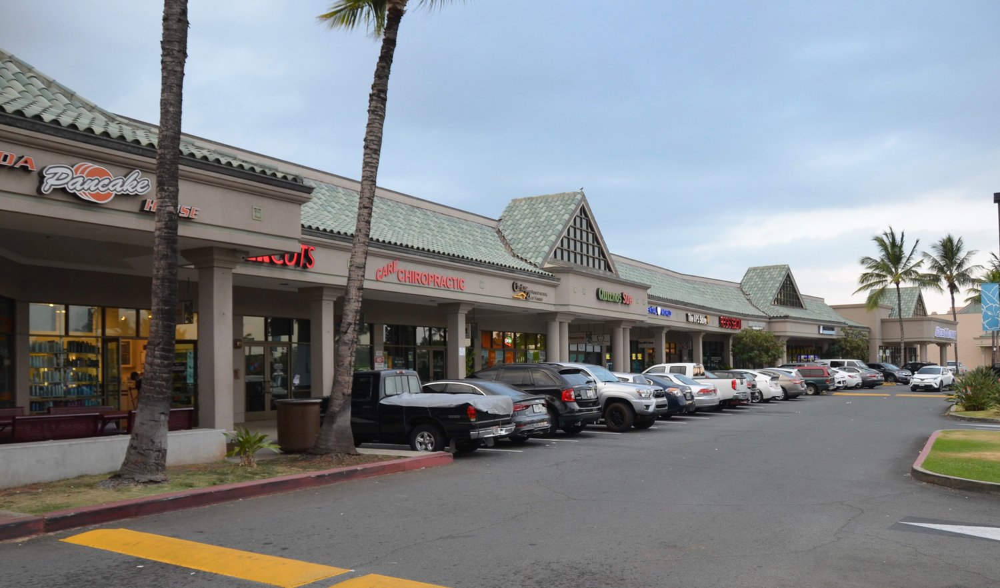
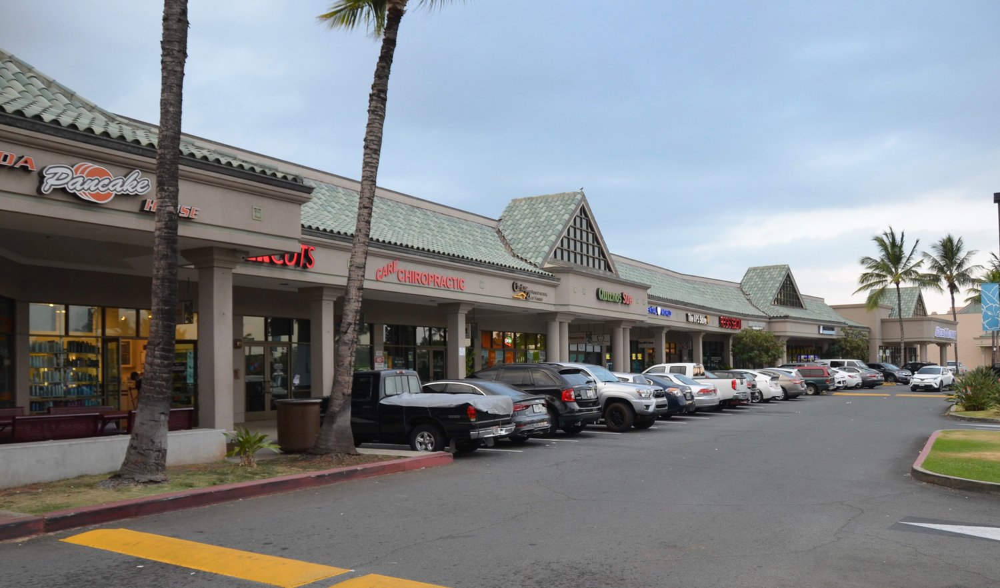

Kapolei 76°
Kapolei is often referred to as the "Second City" of Oahu, as it has been designated as the major urban center and a key driver of economic growth and development on the island. It serves as a hub for businesses, shopping, entertainment, and residential communities.Kapolei is home to the Kapolei Technology Park, a 40-acre business park that focuses on high-tech industries such as information technology, telecommunications, and research and development. It serves as a hub for innovation and technological advancement in the region. Kapolei is a key stop along the Honolulu Rail Transit Project, a major transportation initiative aimed at improving public transit on the island of Oahu. The Kapolei "Ewa-Kai" Rail Station will connect Kapolei to other parts of the island, providing residents with an alternative mode of transportation. Kapolei is home to several shopping centers and entertainment venues, including the Ka Makana Ali'i shopping center. This open-air mall offers a wide range of shops, restaurants, and entertainment options, making it a popular destination for residents and visitors.Kapolei boasts a variety of outdoor recreational opportunities. The city is surrounded by beautiful beaches, such as Ko Olina Beach Park, which offers pristine sands, crystal-clear waters, and stunning sunsets. Kapolei also has several parks, golf courses, and hiking trails for residents and visitors to enjoy.Kapolei is becoming an education hub, with several schools and educational institutions located in the area. It is home to the University of Hawaii - West Oahu, which provides higher education opportunities to students in the region.The newly opened Ka Makana Ali'i Cultural Center in Kapolei celebrates Hawaiian culture and arts. It features performances, exhibitions, and workshops that showcase the rich heritage and traditions of the Hawaiian people.
 
